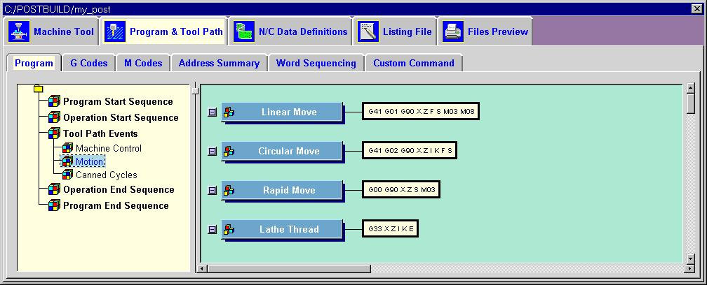
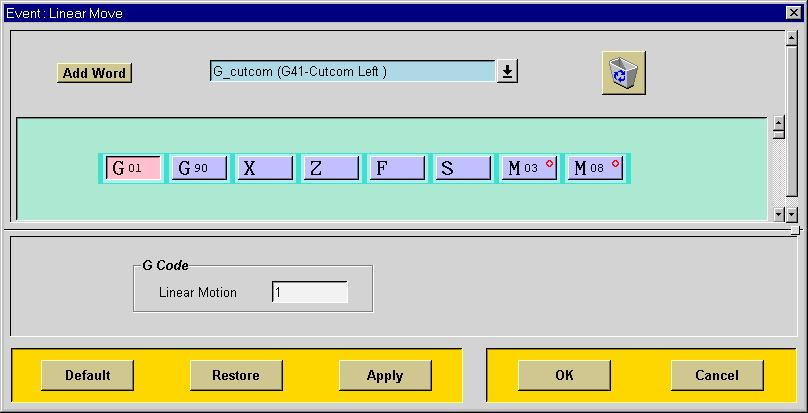
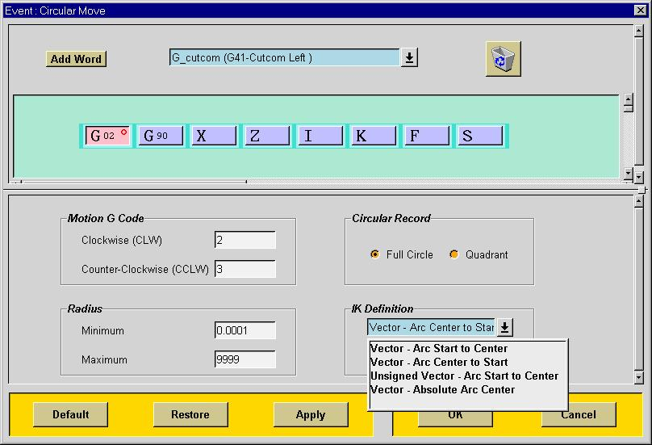
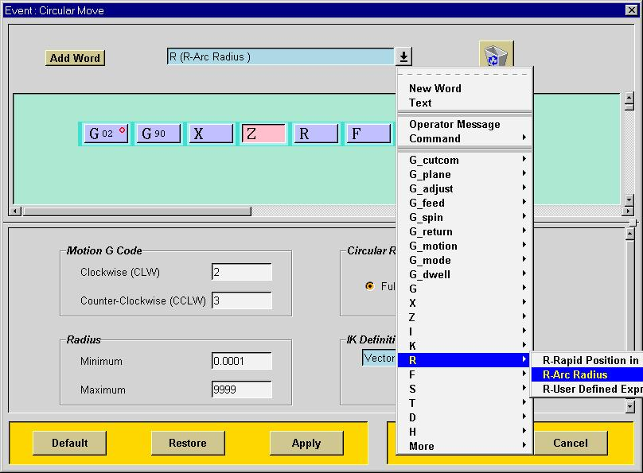
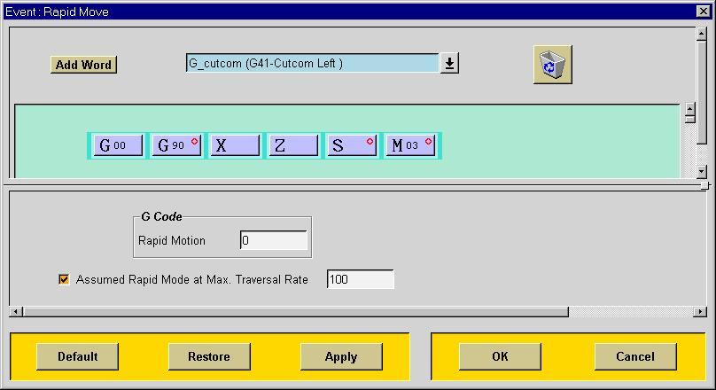
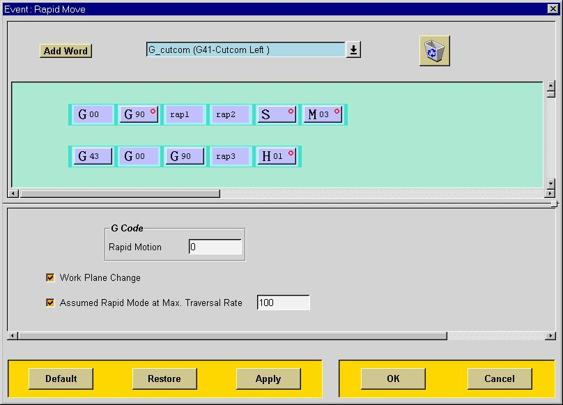
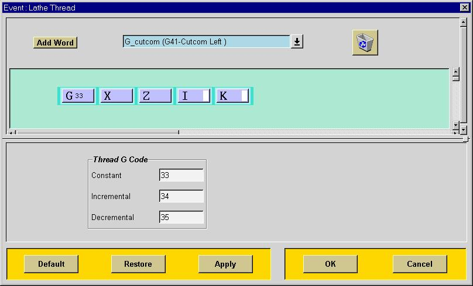

The motion dialogs contain codes such as S, M03, M08, G41, G17 and D. This is done to output these codes with motion. They will be output only if the data changes or they are being forced out with alignment, The data for turning on the coolant will be defined by a user defined event (COOLNT/FLOOD). This event will occur either before the Start of Operation or in its sequence in the Start Post commands, depending on how the event was specified. The most reliable method of outputting the coolant in this case is to have it come output in the first G01 block, before you start cutting. See the Machine Control section on more information on the recommended methods of outputting machine control information.

The motion dialog shows you a summary what each of the motion types for lathe will output. You can click on any one of the blue buttons and edit that motion event.
Linear Move
This event dialog will allow to define the output for linear motion. You can change the linear motion G-code with this dialog. With this event dialog you can add additional blocks or words to your motion block. If you need the F code output before the motion block, simply drag the F word until it highlights above the block.
Circle Move
The Circular Move event dialog will allow you to define the parameters and blocks for outputting circles. This dialog allows you to define the G-code (clockwise or counterclockwise), that will be output with circle block. If you need the G02 or G03 out with every block then right click on the G02 word and set the option to force output. You can do this with any word in any block in Post Builder.
You can set the output to be full circle or output only quadrant boundaries. With full circle output you will get a circle block for each 360 degrees of the circle. If the input file has a circle that is 400 degrees, you will get one block at 360 degrees and another with the endpoint at 400 degrees. If you set the output to quadrant boundaries you will get a circle block for each quadrant boundary and another circle block with the endpoint. Note that you will use the same circle event block for each quardrant you output.
You can also define the minimum and maximum radius that will be output in a circle record. If a circle is processed that has a radius less than the minimum or greater than the maximum, the circle will be approximated with linear moves using the circle tolerance.
The dialog for the mill Circle Move has an added capability of outputting circles in other planes. You can specify that you want XY plane only, YZ plane only, ZX plane only or all three planes.

You can also define how the circle center will be specified. The choices on the dialog define what the I and K words will output. If you need to output the radius instead of I and K, you can find the address you need from the list addresses as shown above. Pull down the address arrow until you see the R word and select the Arc Radius. Now drop the R word into your block. If you don't need both I, K and R, then remove the I and K and put them in the trash can.
Rapid Move (Lathe)
This dialog defines the G-code and output for the Rapid Move event. This template will be used for all rapid moves in your postprocessor. This event handles all of the motion types that are not cutting moves. Additionally you can specify a feed rate at which your Linear Move will be output using the Rapid Move event.
Some controls require special codes in the rapid motion block. For instance, the Bostomatic control requires a G01 and R in the rapid motion block. To configure your rapid motion to output this way, do the following:
Another example is a control that requires an F0 in addition to a G00 in the rapid motion block. To configure this block, do the following:
- Select the address pull down and select "text".
- Enter the character "R".
- Add the word to your rapid move block.
- Go to the G code tab and change the G code from 0 to 1 for rapid motion.
- Select the address pull down and select "F" and "user defined expression".
- Enter the value "0".
- Add the word to your rapid move block.
Rapid Move (Mill)
This dialog shows the two blocks that will be output for a rapid move. The words "rap1" and "rap2" represent the X and Y words and the word "rap3" represents the Z word if the spindle axis is Z. The following table expains how rap1, rap2 and rap3 are defined.
Spindle Axis Z Spindle Axis Y Spindle Axis X X rap1 rap1 rap3 Y rap2 rap3 rap1 Z rap3 rap2 rap2 If the work plane change radio button is selected, your post will break all rapid motion into two blocks. Assuming you currently have specified Z as the spindle axis and if you are moving the tool to a higher position, in the first block you will get a Z move and in the second block you will get a XY move. Likewise, if you are moving to a lower position along the tool axis, you will get a XY move followed by a Z move.
If the work plane change button is not selected, then you will get all rapid motion in a single block.
The rapid move event for four and five axes postprocessor is exactly the same except the fourth and fifth axes are output with the non-spindle axis. If you need a different sequence, you can output Z first, then AB and then XY for example simply by moving the blocks around.
Lathe Thread
The Lathe Thread event dialog allows you to define the output for a single threading pass. For turn threads a block with G33 Z and K will be output and for face threads a block with G33 X and I will be output. For taper threads a block with G33 X Z I and K will be output. You can also set the G codes for inceasing and decreasing lead threads.
The capability for a Thread cycle that includes feed, thread, pullout and traverse in a single canned cycle thread block is not currently available. A thread cycle event is not yet available from Unigraphics.